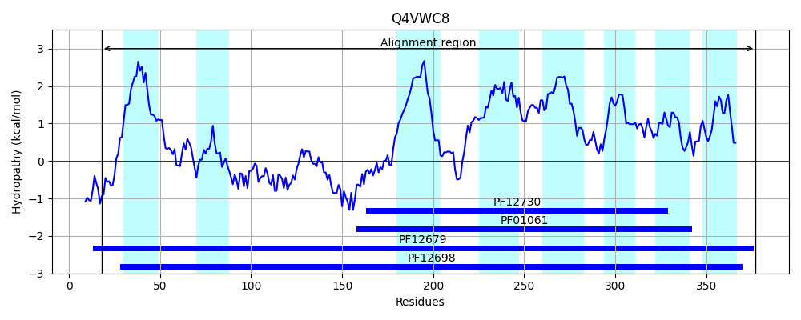
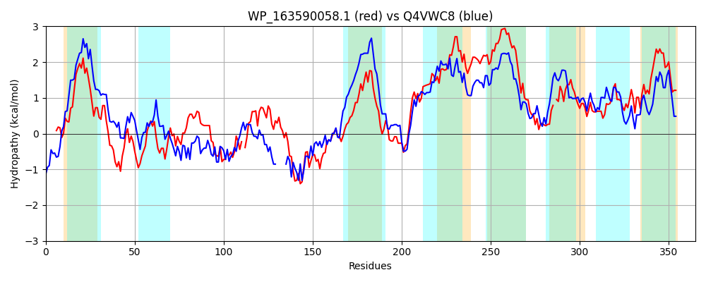

Hit Accession: Q4VWC8
Hit TCID: 3.A.1.105.4
Hit Description: gnl|BL_ORD_ID|13885 gnl|TC-DB|Q4VWC8|3.A.1.105.4 Inner membrane permease protein - Pseudomonas sp. M18.
Mach Len: 365
e:0.000000
Query TMS Count : 6
Hit TMS Count: 8
TMS-Overlap Score: 5.300000
Predicted Substrates:None
BLAST Alignment:
Score: 490 , Bit scores: 193 bits, E-value: 2.2e-58, Alignment length: 365, Percentage identity: 32
Query: 4 KEIHELRRDKVSISMVLLTPIFQLIILGYAINMDPHNLPTALLNYDTERMSHIFVTEAQNTGYFSMIPVDSEEAAQKAFVRGDVTFIVTIPEGFTRKMLRGE-KPQLLIQG-DAIDPITTGNALSALVQVAKSMFQHDLPGDMRISQKEDDFELIIHRM-FNPEGITQFNTIPGIMGSILSTTLILMTALSITRERENGALENLLVSPLTGFEVIVGKITPFVVIGLFQATLILIAAVLLFNIPLHGSVFLLFFVLLIYVFLCLSIGIGISGLAQNQLQALQMSSF-YFIPSIMLSGFISPFISMPDWAKAIGSCLPLTYFIRLVKGIMLKGYSAMALLPDLLPLIGLAVIVIGVGLKSYRKTLD 364
KE+ +L RD+ ++++ ++ PI ++I GY +++D N P A++ D+ + + + YFS + V S A+ + V I+ IP F+R++ +G+ + QLL+ G DA T G ++ ++V H+ D ++ I+ RM FN + + +PG++ I++ +T+L + RE E G LE+L V+P+ E+++ KI P+ ++GL ++ L++A LLF +P+ GS+ LL F ++Y+F+ L IG+ IS +NQ A Q++ F+P++MLSGF+ ++P + + +GS LP TYF+ LVK + L G + L +LL L G AV ++ RK LD
Sbjct: 18 KELRQLLRDRSNLAIGVILPIVLILIFGYGLSLDIRNTPLAIVLEDSSPAARDVAAKLAGSSYFSTVQVASIREAEDLMRQRTVDGILRIPVDFSRRLEQGDGRIQLLLHGADANSAATLGRYVNGALRV-----WHEQRVDRLGGERVQGGVRIVERMWFNAANSSTWYLVPGLIALIITLVGAFLTSLVVAREWERGTLESLFVTPVRSAEILLAKIIPYFLVGLLGLSMCLVSARLLFRVPIQGSLVLLLFSSMLYLFVTLGIGLLISARTRNQFLASQVAILSSFLPALMLSGFLFDLRNVPTFIRLVGSILPATYFMELVKTLFLAGDNWHLALKNLLILAGYAVFLLNAARLCTRKKLD 377 | Protein Hydropathy Plots: |
|---|
 |  |
Pairwise Alignment-Hydropathy Plot:
|
|---|
|  |